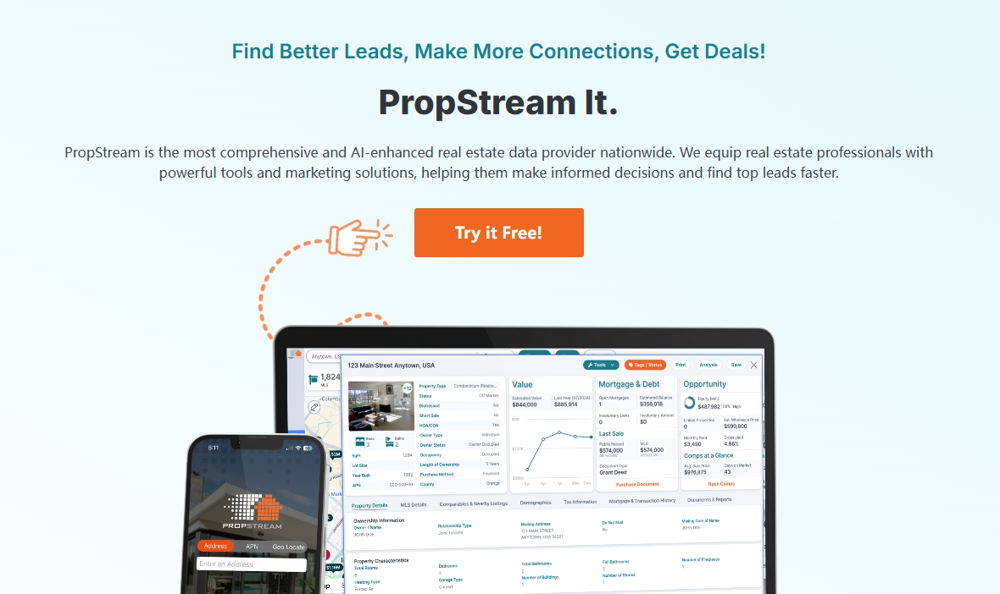
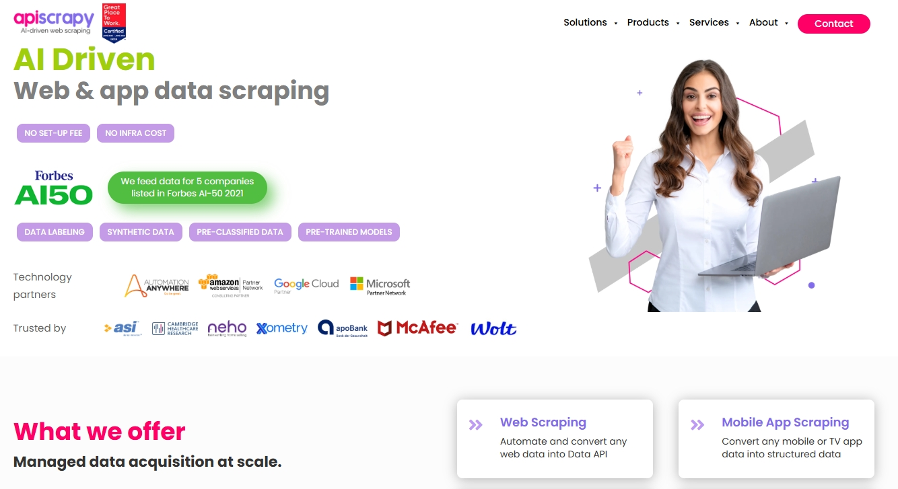
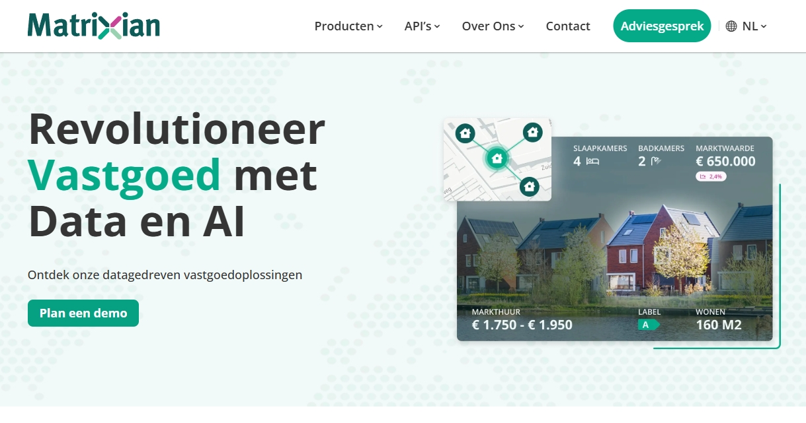
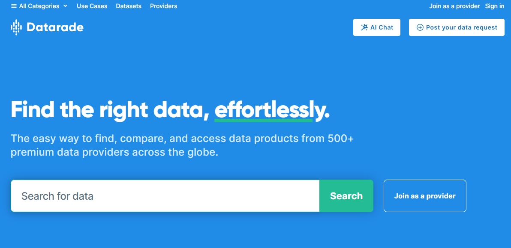
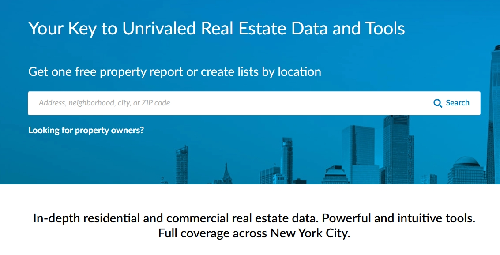

12 of Best Real Estate Data Providers in 2025
Discover the best data sources for real estate AI models, from property ownership and mortgage records to market trends and neighborhood insights. Learn which platforms offer the most accurate, scalable, and integration-ready datasets for predictive modeling, investment analysis, and real estate innovation.
The real estate industry is undergoing a major transformation driven by artificial intelligence. From automated property valuations and predictive market forecasts to fraud detection and risk scoring, AI models are rapidly becoming essential tools for investors, lenders, developers, and real estate professionals. Yet, the effectiveness of these AI applications relies heavily on the quality and variety of the data sources that feed them.
Unlike traditional real estate analysis that depended on localized records or fragmented listings, modern AI-powered platforms require large-scale, structured, and accurate datasets. These include ownership and deed records, mortgage performance, foreclosure data, property characteristics, rental and sales trends, neighborhood demographics, and hazard risks. With the right data foundation, AI models can identify investment opportunities, improve valuation accuracy, streamline due diligence, and even predict future market movements with higher precision.
This guide explores the best data sources for real estate AI models, covering a diverse range of providers that specialize in property intelligence, mortgage and transaction data, commercial insights, and even European market analytics. Whether you are building a machine learning pipeline, developing an automated valuation model (AVM), or conducting nationwide investment research, the platforms highlighted here provide the reliable, scalable, and integration-ready datasets you need to power smarter decision-making in real estate.
1. Bright Data Zillow Datasets

The Bright Data Zillow Dataset provides structured access to one of the most comprehensive sources of residential property listings and market information in the United States. Covering millions of homes, it includes details such as listing prices, rental estimates, property characteristics, historical sales, and neighborhood trends.
With export-ready formats and API integrations, the dataset enables developers, analysts, and investors to train real estate AI models with highly granular and continuously updated data. Whether the use case is automated valuation, rental price forecasting, or neighborhood-level trend analysis, this dataset delivers the necessary scale and accuracy.
Features
2. PropStream
PropStream consolidates property, ownership, and mortgage data into a single platform designed for investors, agents, and analysts. With national coverage across residential and commercial properties, it provides deep insights into property history, equity, liens, and tax data.
Its built-in marketing and lead-generation tools streamline outreach, while integrated analytics support valuation modeling, portfolio targeting, and risk assessment. Export options and API access enable seamless integration into broader AI-driven workflows.
Features
3. Immobiliare.it Insights

Immobiliare.it Insights delivers deep real estate market analytics focused on Italy and European markets. The platform aggregates listing data, rental trends, pricing dynamics, and buyer demand signals to support developers, investors, and lenders in market intelligence.
Its visualization dashboards and export-friendly reports make it easy to monitor market fluctuations and benchmark property performance. The platform is particularly valuable for AI models targeting European real estate forecasting and demand prediction.
Features
4. APISCRAPY
APISCRAPY provides ready-to-use web scraping APIs designed to extract large-scale real estate datasets quickly and reliably. With prebuilt connectors for listings, property details, and rental markets, it enables rapid deployment of AI-driven real estate research and valuation models.
The platform’s customizable workflows and structured JSON/CSV outputs streamline integration into data pipelines, supporting automation for analysts, developers, and investment teams.
Features
5. BatchService

BatchService consolidates property, mortgage, and ownership datasets into a unified platform tailored for investors and wholesalers. It provides skip tracing, lead generation, and direct marketing tools to connect property insights with actionable outreach.
Its mobile and web apps make property research and lead management accessible on the go. BatchService’s integration of data and marketing tools streamlines the workflow from discovery to deal execution.
Features
6. Think Data Group

Think Data Group specializes in curated property datasets and enrichment services, offering clean and reliable data tailored to client use cases. Its solutions cover ownership, tax, deed, foreclosure, and demographic overlays to support real estate analytics, valuation, and portfolio modeling.
With data normalization and enrichment capabilities, Think Data Group ensures consistency across multiple sources, making it a strong partner for enterprises seeking high-quality inputs for real estate AI systems.
Features
7. TovoData

TovoData delivers nationwide property, mortgage, and consumer datasets optimized for lead generation, marketing, and analytics. Its datasets include owner profiles, equity positions, mortgage status, and property characteristics, offering actionable insights for investors and service providers.
With flexible licensing and delivery options (API, bulk, and cloud), TovoData integrates seamlessly into real estate AI pipelines, supporting applications from predictive marketing to automated valuation.
Features
8. Matrixian
Matrixian Group is a leading provider of AI-powered real estate data solutions, offering both automated valuation models and comprehensive market intelligence. Their HomeMatrix platform delivers structured property data across European markets, with continuous updates to ensure accuracy.
Typical fields include automated valuation estimates, property characteristics, historical sales data, neighborhood trends, energy efficiency ratings, and investment risk scores - perfect for building valuation models and market analysis tools. The platform transforms raw property data into actionable insights through AI analysis, making it invaluable for developing accurate real estate models.
Features
9. Datarade
Datarade is a top choice for real estate AI, offering both pre-built datasets and custom data sourcing solutions. Their platform provides structured access to thousands of global property data sources, with automated updates to ensure data freshness. Datarade transforms raw real estate information into ready-to-use formats like CSV, JSON and APIs, available through scheduled deliveries or real-time feeds.
Typical fields include property characteristics, transaction histories, zoning data, price trends, neighborhood demographics and alternative data signals - ideal for training valuation models and predictive analytics. The platform's ability to aggregate and standardize disparate global property data makes it an invaluable resource for building comprehensive real estate AI systems.
Features
10. ATTOM

ATTOM curates a comprehensive property data warehouse, covering over 155 million U.S. properties with layers of ownership, mortgage, tax, deed, foreclosure, and neighborhood details. Its datasets fuel a wide range of real estate AI applications, from automated valuations to risk scoring and trend analysis.
The ATTOM Cloud Data Delivery platform ensures fast, scalable access to clean, normalized datasets. With flexible APIs and bulk delivery options, ATTOM empowers enterprises, investors, and fintech platforms to leverage real estate intelligence with minimal integration friction.
Features
11. PropertyShark
PropertyShark delivers detailed property and ownership data, with standout coverage in major metros. Its Mason platform equips professionals and investors with comprehensive tools for due diligence, owner verification, deed history, and comps analysis. Aggregated details like liens, permits, and zoning streamline pre-listing research and risk assessment.
Export-friendly interfaces and integration capabilities support seamless analyst workflows and help reconcile ownership or transaction discrepancies across sources, providing a reliable QA layer for complex portfolios.
Features
12. CoreLogic

CoreLogic is a leading provider of property intelligence and risk management solutions, covering residential and commercial real estate nationwide. Its datasets span property characteristics, valuations, mortgage performance, hazard risk, and neighborhood demographics, making it a trusted source for lenders, builders, insurers, and investors.
The platform’s integration with analytics and workflow tools enables predictive modeling, fraud detection, and market forecasting. For real estate AI, CoreLogic serves as a foundational data layer that combines property details with economic and environmental context.
Features
Conclusion
The real estate industry’s shift toward AI-driven decision-making underscores a simple truth: data quality is the foundation of innovation. From ownership verification to nationwide mortgage insights and hyper-local market trends, the providers featured in this guide supply the raw material that enables predictive modeling, investment intelligence, and risk assessment at scale.
By leveraging these specialized providers, organizations can reduce uncertainty, improve valuation accuracy, and accelerate the deployment of AI solutions across the real estate value chain. Whether your goal is to spot high-potential investment opportunities, optimize marketing campaigns, or enhance portfolio risk management, the right data source can serve as a strategic advantage.
In the era of AI-driven real estate, data is no longer just an input—it is a competitive edge. Partnering with the right platforms ensures that your AI models are not only more accurate but also better equipped to uncover insights that traditional analysis often misses. With the resources outlined in this guide, real estate professionals can confidently move toward a future where data and AI shape every smarter decision.
Why is high-quality data important for real estate AI models?
It is a technique that entails getting data from websites and organizing it into a structured, easy-to-use format. Therefore, you can use the data for custom uses, market research, price monitoring, real estate analysis, lead generation, etc.
What types of data are most valuable for real estate AI?
Key data types include ownership records, mortgage performance, property characteristics, historical transactions, rental trends, neighborhood demographics, and risk overlays such as hazard or foreclosure data.
Can these data providers integrate with existing AI workflows?
Yes. Most leading providers offer export-ready datasets, APIs, and cloud delivery options, making it easy to integrate their data into machine learning pipelines and enterprise systems.